1 Introduction to Spatial Data
1.1 What is Spatial Data?
Spatial data consists of positional information, answering the question “where is it” (on Earth, body, Sun, moon etc). Many empirical data contain not only information about the attribute of interest (i.e. the response/variable being studied), but also other variables that denote the geographic location where the response was observed. In particular, spatial data has a spatial reference: they have (i) coordinates and (ii) a system of reference for those coordinates (aka a coordinate reference system, CRS).
- Locations of volcano peaks on Earth
- We could list the coordinates for all known volcanoes as pairs of longitude and latitude decimal degree with respect to the prime meridian of Greenwich and zero latitude at the equator (known as the World Geodetic System - WGS84).
- Temperature at various residential towns around Singapore
- We can measure the temperature for these areas around Singapore and make use of the CRS - SVY21.
- Dengue clusters around Singapore
- Similarly, we can collect data on dengue clusters around Singapore and make use of CRS - SVY21.
To verify if the CRS used in the dataset is accurate, we can refer to the Coordinate Systems Worldwide - https://epsg.io/.
1.2 Key Features of Spatial Data
One of the key features of spatial data is the auto-correlation (i.e. correlation with itself) of observations of observations in space. Observations in close spatial proximity tend to be more similar than for observations that are more spatially separated. We can understand that \(Cor({X_1},{X_2})\) ranges from \(-1\) to \(1\) and that correlation increases as \(X_1\) and \(X_2\) get closer and closer to each other.
Essentially, spatial data analysis developed concurrently across many disciplines, including geology, geography, and meteorology, as well as other non-traditional statistical areas. This led to the development of various methodologies, from traditional statistical techniques like linear models, response surface theory, and spatial statistics to spatial econometric approaches. The primary challenge today is to effectively combine these diverse tools to suit our specific analytical needs.
1.3 Types of Spatial Data: Theoretical Classification
We denote a spatial process in \(D\) dimensions as: \({Z(s):s\in D \subset R^d}\) where \(Z\) is the observed attribute (such as pollution, temperature etc.) of location s, a \((D \times 1)\) vector of coordinates. The spatial data types are distinguished through characteristics of the domain \(D\).
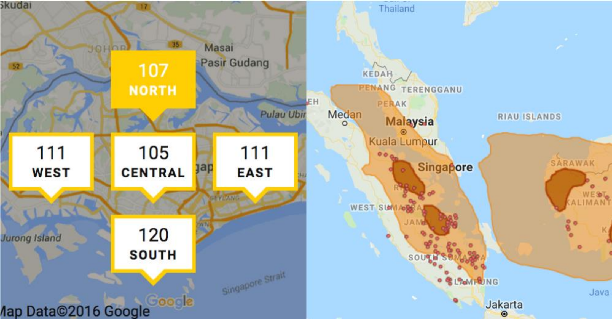
1.3.1 Geospatial / Geostatistical / Earth Data
Domain \(D\) is continuous s.t. \(Z(s)\) can be observed anywhere in \(D\). This means that between any two sample locations, we can theoretically place an infinite number of other samples. For example, I can measure temperature at multiple locations in the same classroom.
- For example, consider measuring air temperature or PSI value, which at least in theory, can be recorded at any location.
- However, we will only observe a finite number of observations (e.g. only taking temperature at Dhoby Ghaut, which is 1 location, making it one sample).
- In the image above, we would have monitoring stations at some locations and use that data to reconstruct the ozone layer, as compared to taking measurements across the entire region, which is costly and operationally impossible.
- Other examples include ozone layer concentration of a certain material, ground communication levels etc.
Due to the continuity of \(D\), geostatistical data is also known as spatial data with continuous variation. Since the spatial domain is continuous, it cannot be sampled exhaustively and an important task in the analysis is the reconstruction of the surface of the attribute \(Z\) over the entire domain, i.e. mapping of \(Z(s)\).
Continuity is associated with the domain and not the attribute itself (which may be discrete or continuous or even nominal or ordinal). For example, temperature can be measured using a Celsius scale (continuous) or an ordinal scale (discrete).
1.3.2 Point Patterns
A point pattern has a random domain and the attribute itself will be Degenerate/binary in nature (i.e. it is either there or not there). If along with the location of an event, if we observe a stochastic attribute, then it is called a marked pattern.
- Point Patterns:
- Locations of lightning strikes
- Locations at which weed emerge in a garden
- Location of lunar craters
- Marked Patterns:
- Observing the size of the lunar crater along with the location
1.3.3 Areal / Lattice / Regional Data
Areal data is spatial data where the domain \(D\) is fixed and discrete (non-random and countable). Spatial locations with areal data are often referred to as sites or areal units.
- Postal codes
- GRCs
- Planning areas
- Remotely sensed data reported by pixels (such as data coming from satellites)
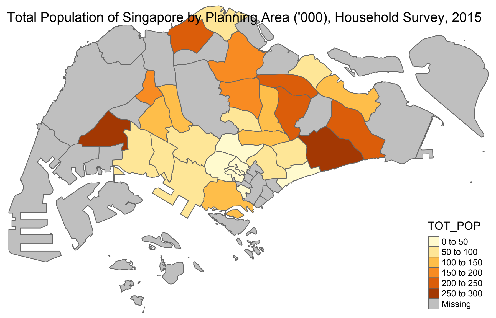
As seen in the image above, we would denote \(Z\) as total population.
It is important to note that one of the main differences between point data and areal data is that, in practice, areal data are spatially aggregated over areal regions. Mathematically, this refers to an integration of a continuous spatial attribute. Essentially, we are only taking 1 observation for the entire planning area.
- Yield measures on an agricultural plot
- Event counts (such as deaths, crimes, voter turnout, etc.) for various sites (such as postal codes, regions, states, etc.)
| Areal Unit Type | More Precise Term | Example |
|---|---|---|
| Irregular | Regional data | (No example given) |
| Regular | Lattice data | Satellite imagery |
Key Feature: Given the discrete nature of the collection of sites, areal data can be exhaustive, which is another differentiating feature compared to point data or geospatial data.
- Example: Voter turnout data provides a number for every electoral unit, and the issue of predicting the number for any other area does not arise.
1.3.3.1 Modifiable Areal Unit Problem (MAUP)
Coined by geographers during the 1970s, the modifiable areal unit problem (MAUP) is one of the most stubborn problems in spatial analysis when spatially aggregated data are used. Data tabulated for different spatial scale levels or according to different zonal systems for the same region will not provide consistent analysis results. This means that when we run analysis on a regional vs planning area basis, the results will differ but both results are correct and accurate (even if they result in contrasting conclusions).

The statistical methodology to be applied will inherently depend on the type of spatial data that we have. Refer to Chapter 8 for the different statistical techniques covered.
1.4 Types of Spatial Data: Practical Classification
Spatial data is classified and contained in software programs such as R, ArcGIS etc. that handle spatial datasets in the following manner:
| Type | Description | Example |
|---|---|---|
| Points | A single point location. | A GPS reading or a geo-coded address. |
| Lines | A set of ordered points connected by straight-line segments. | Contour lines, road networks, or river networks. |
| Polygons | An area marked by one or more enclosed lines. | Administrative regions, a collection of islands, or electoral districts. |
| Grids/Raster | A collection of rectangular cells organized in a regular lattice. | Satellite imagery that registers data on a regular grid. |
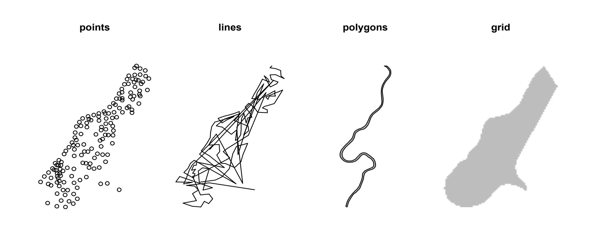
The first three types (points, lines, and polygons), are collectively known as vector data. The geographic vector data model is based on observations located within a coordinate reference system (CRS). Observations can represent self-standing features (e.g., the location of a bus stop) or they can be linked together to form more complex geometries such as lines and polygons. Most vector geometries contain only 2-dimensions (3- dimensional CRSs contain an additional \(z\) value, e.g.: height above sea level, depth, etc).
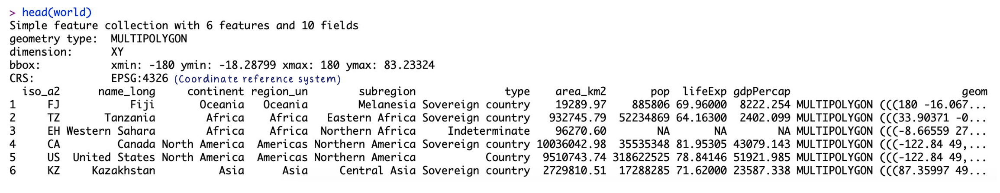
EPSG:4326 refers to the World Geodetic System, which is our typical longitude and latitude
1.4.1 Point
A point is composed of one coordinate pair representing a specific location in a coordinate system. Points are the most basic geometric primitives having no length or area.
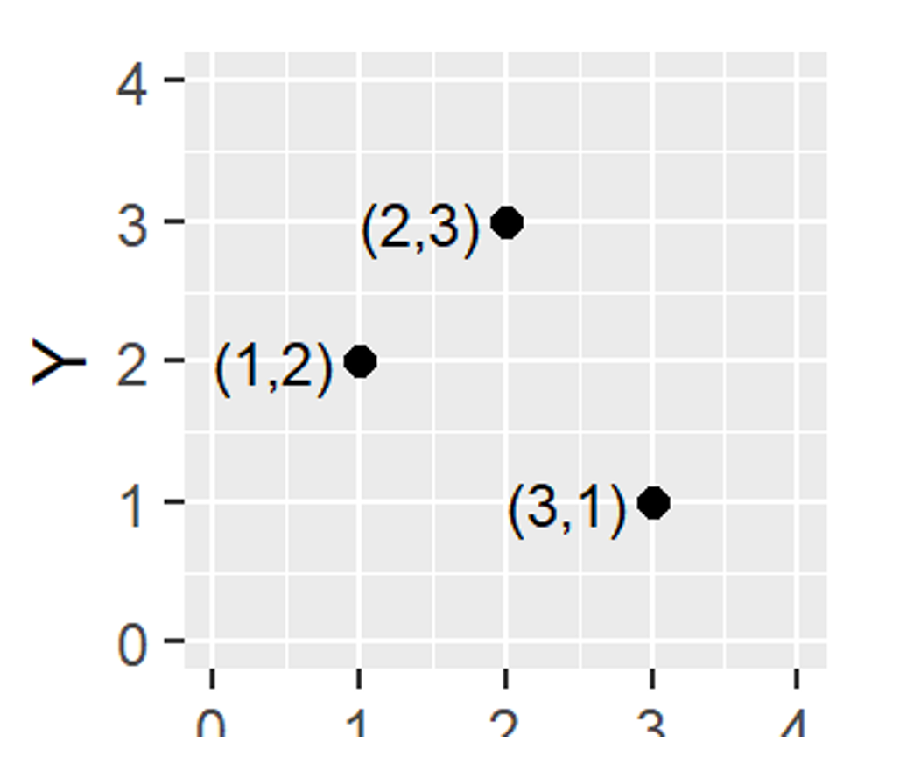
1.4.2 Polyline
A polyline is composed of a sequence of two or more coordinate pairs called vertices. Essentially, when we join 2 or more points, it becomes a polyline. A vertex is defined by coordinate pairs, just like a point, but what differentiates a vertex from a point is its explicitly defined relationship with neighbouring vertices. A vertex is connected to at least one other vertex. Roads and rivers are commonly stored as polylines
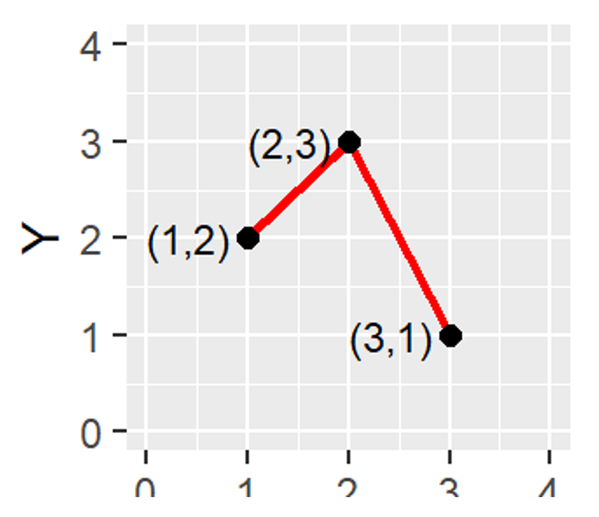
1.4.3 Polygon
A polygon is composed of three or more line segments whose starting and ending coordinate pairs are the same. Sometimes we will see the words lattice or areal unit used in lieu of polygon. The area that a polygon encloses is explicitly defined. If it isn’t, then we are working with a polyline feature. If this does not seem intuitive, we can think of three connected lines defining a triangle: they can represent three connected road segments (thus polyline features), or they can represent the grassy strip enclosed by the connected roads (in which case an ‘inside’ is implied thus defining a polygon).
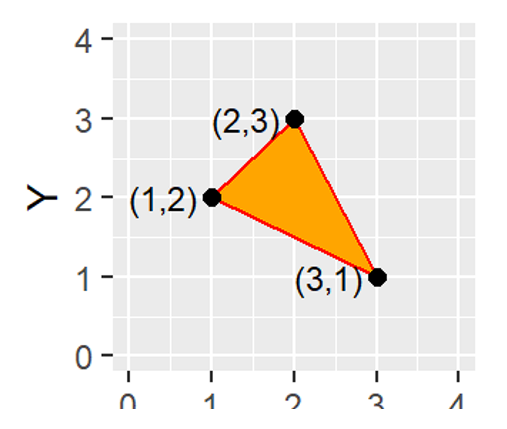
1.4.4 Raster Data
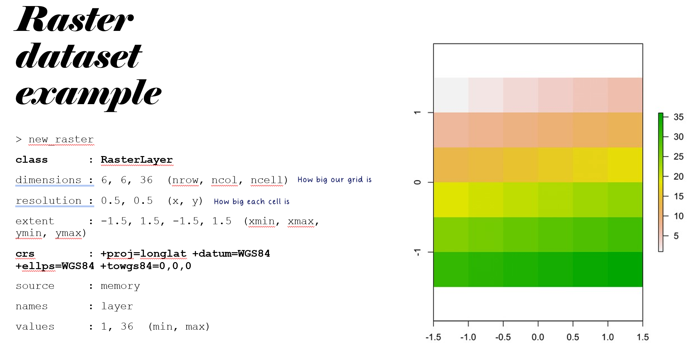
The geographic raster data model usually consists of a raster header and a matrix (with rows and columns) representing equally spaced cells (often also called pixels or tiles). The raster header defines the coordinate reference system, the extent and the origin. The header defines the extent via the number of columns, the number of rows and the cell size resolution. Starting from the origin, we can access and modify each single cell by either using the cell ID or by specifying the rows and columns.
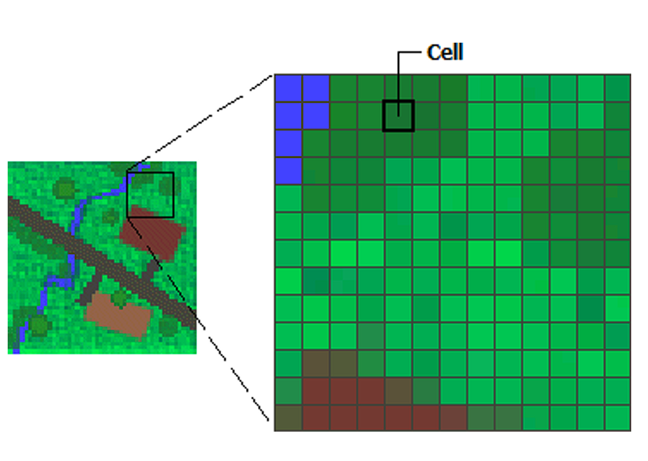
This matrix representation avoids storing explicitly the coordinates for the four corner points (in fact it only stores one coordinate, namely the origin) of each cell corner as would be the case for rectangular vector polygons. This means that we are referencing our data with regards to the origin. This and map algebra makes raster processing much more efficient and faster than vector data processing (think of satellite imaging). In contrast to vector data, the cell of one raster layer can only hold a single value. The value might be numeric or categorical. Raster datasets are commonly used for representing and managing imagery, surface temperatures, digital elevation models, and numerous other entities.
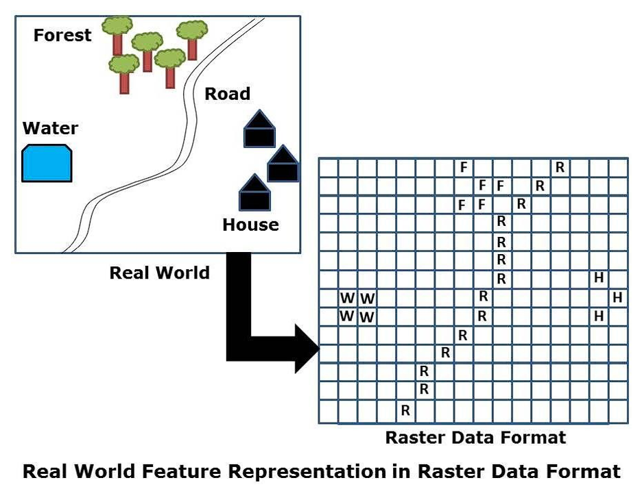
Working with raster data tends to create more pixelated maps, as compared to vector maps
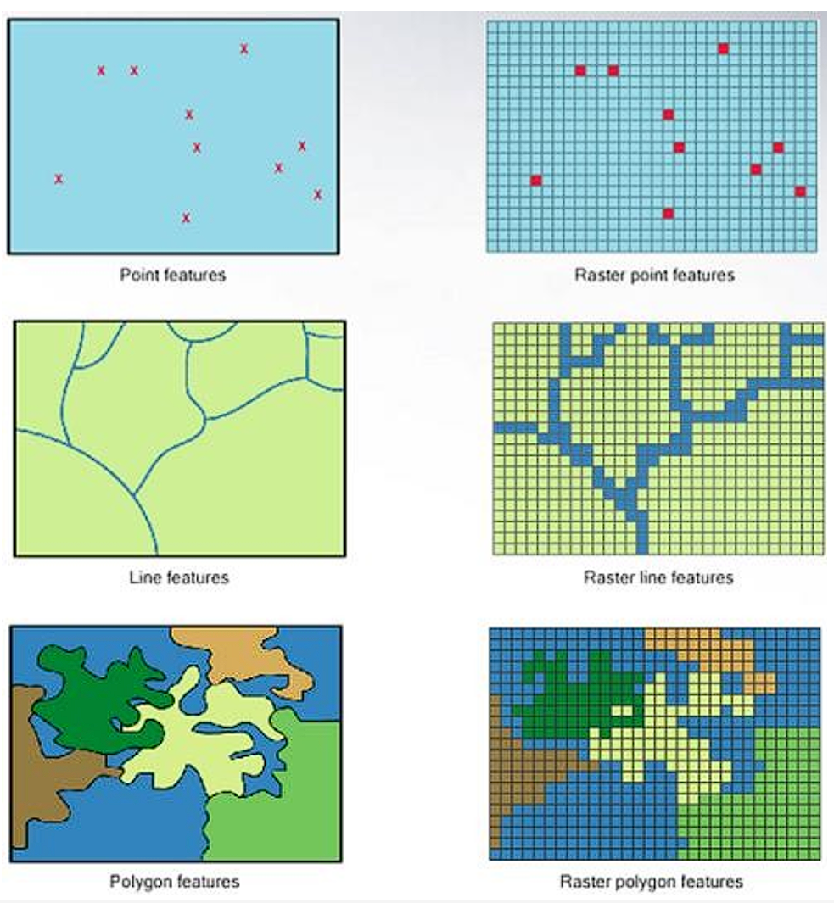
| Feature | Vector Data | Raster Data |
|---|---|---|
| Structure | Has discrete, well-defined borders and a high level of precision. | Divides a surface into a regular grid of cells. Raster datasets are the basis of background images used in web-mapping and have been a vital source of geographic data since the origins of aerial photography and satellite-based remote sensing devices. Rasters aggregate spatially specific features to a given resolution. |
| Common Use | Tends to dominate the social sciences; human settlements have discrete borders. | Dominates environmental sciences due to reliance on remote sensing data. |
| Examples | Geo-coded addresses, roads, or administrative regions. | Satellite imagery, aerial photography, or elevation models. |
| Flexibility | There is much overlap in some fields and raster and vector datasets can be used together. Possible to convert between vector and raster formats. Ecologists and demographers commonly use both. | There is much overlap in some fields and raster and vector datasets can be used together. Possible to convert between raster and vector formats. Ecologists and demographers commonly use both. |
1.5 Spatial Data File Formats
| Vector Data File Formats | Raster Data File Formats |
|---|---|
| • ESRI Shapefile: Popular format consisting of at least three files. | • GeoTiff: Popular raster format. A TIFF file containing additional spatial metadata. |
| • GeoJSON | • File Geodatabase |
| • KML: XML-based format for spatial visualization, developed for use with Google Earth. | • Arc ASCII: Text format where the first six lines represent the raster header, followed by the raster cell values arranged in rows and columns. |
| • GPX: XML schema created for exchange of GPS data. | |
| • File Geodatabase | |
| • GeoPackage |
1.5.1 ESRI Shapefile
A shapefile is a file-based data format native to ArcView 3.x software (a much older version of ArcMap). It stores a collection of features that have the same geometry type (point, line, or polygon), the same attributes, and a common spatial extent (scale). Despite its name, a “single” shapefile is composed of at least three files, and as many as eight. Each file that makes up a “shapefile” has a common filename but different extension type. Each file has a specific role in defining a shapefile.
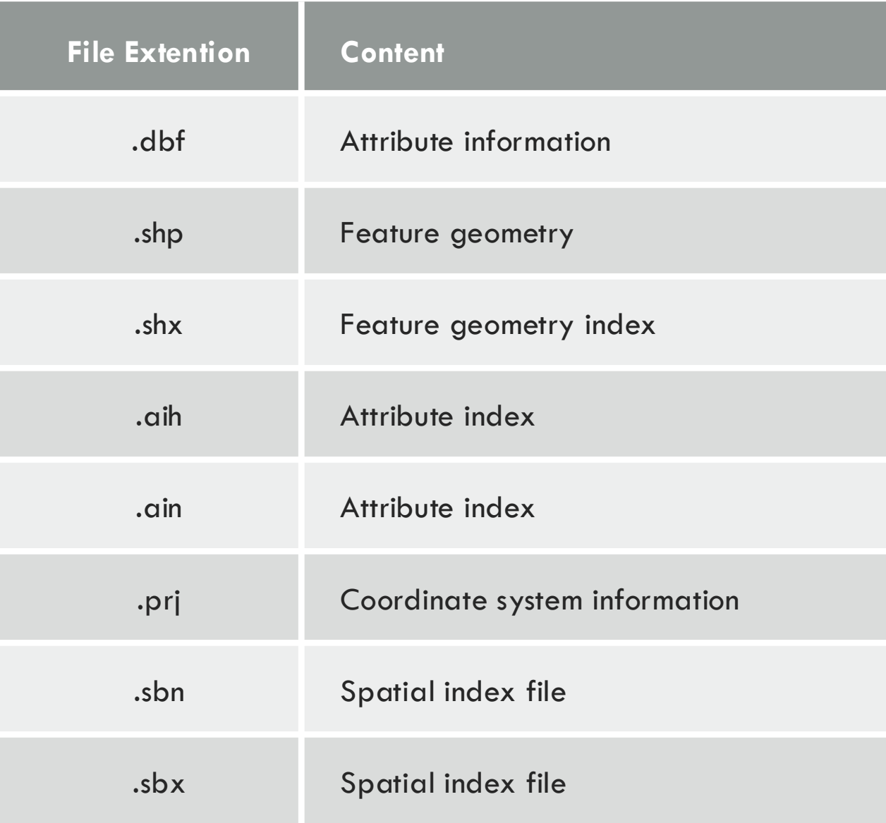
With this understanding of spatial data and the file formats that we will be working with in R, we can now take a closer look as to how to analyze spatial data using the sf() package.